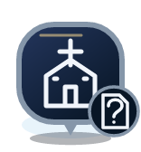

VESTIGE · POI IMMERSIFS V2
Chaque lieu a son histoire.
Planche de contrôle des assets de production. Ce n’est pas une capture de carte native ni une validation iPhone.
VIENNE · ANTIQUITÉTemple d’Auguste et de Livie
Temple et vestiges
Éditorial · à contrôler
Source disponible ≠ information vérifiée. Les huit fiches initiales ne sont pas marquées vérifiées.
Huit lieux phares, huit miniatures
Silhouettes illustrées des monuments actuels. L’or décoratif ne constitue pas une certification.
Temple d’Auguste et de Livie
Théâtre antique de Vienne
Saint-Maurice
Saint-André-le-Bas
Fourvière
Théâtre de Lugdunum
Saint-Jean
Amphithéâtre des Trois Gaules
+ CONTRIBUER
Enrichir la mémoire des lieux
Lieu → contenu → sources et photo → aperçu.
Brouillon privé sur l’iPhone. Aucun envoi ni publication sans modération.
La catégorie au centre
Temple et vestiges
Musée
Château et fortifications

Édifice religieuxPatrimoine industriel
Nature
Autre patrimoine
Le sceau indique le contrôle
Vérifié par la rédaction
Communauté · non contrôlé
Communauté · en attente
Communauté · vérifié
Importé · non vérifié
Éditorial · à contrôler
Exemples de légende. Aucun contributeur ni lieu vérifié n’est inventé dans le catalogue.
Votre progression, séparément
À découvrir
À portée · halo corail
✓Découvert · coche blanche
Sélection · halo blanc
Le sceau document « ? » reste visible après découverte. Découvrir n’est pas vérifier.